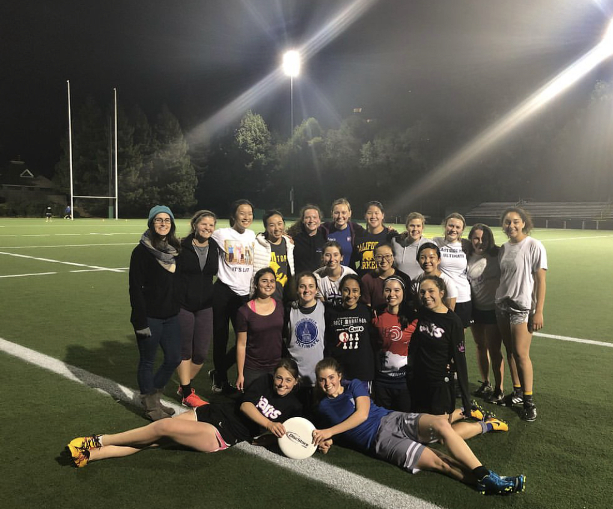

The Rules of Ultimate
Here are some rules of Ulitmate. The game has no referees, so the players must know the rules, and hold themselves to following them. #accountability.
- Most important rule - "Spirit of the Game". Be nice to other players and follow the rules!
- You can't run with the frisbee. To get it to other people, you have to throw it.
- To score a point, you have to catch the frisbee in your team's endzone
- It's a non-contact sport, so if you hit someone it's a foul.
The Tarts (a team with excellent spirit)
